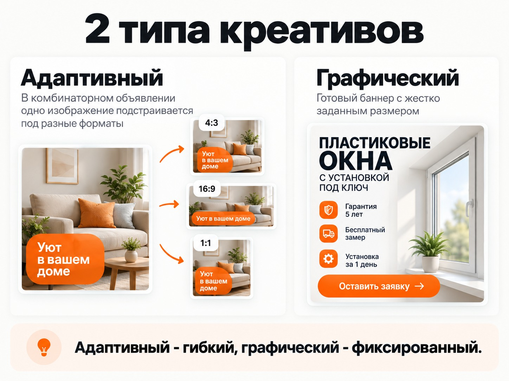
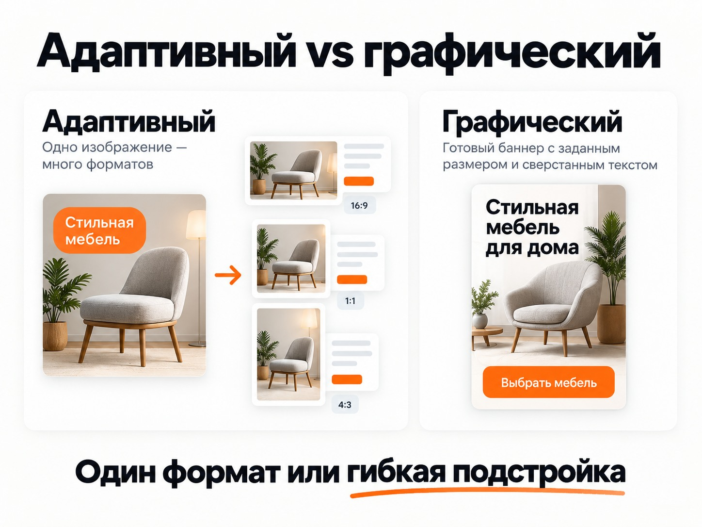
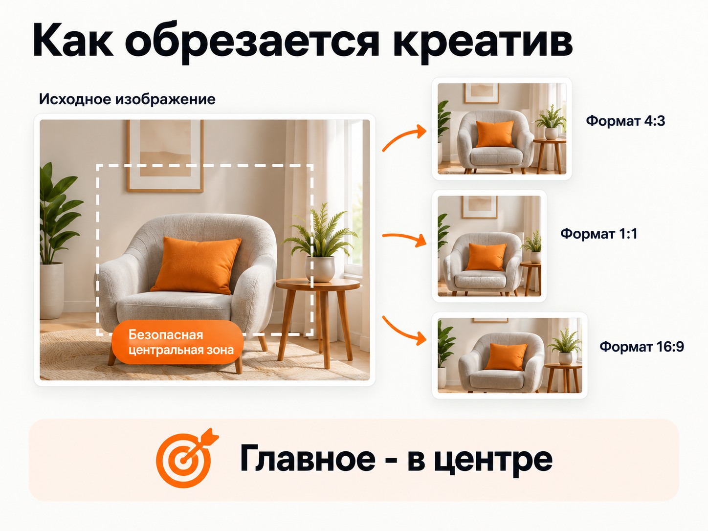
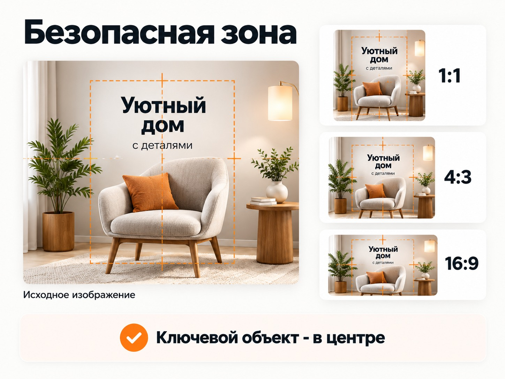
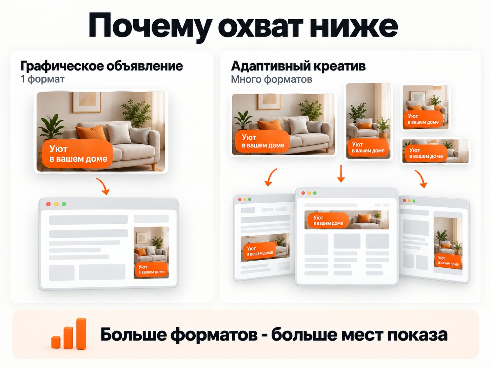
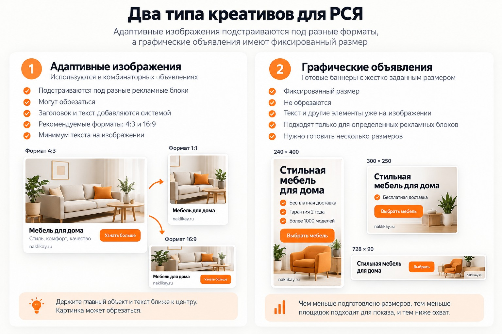

Блог о платном трафике
Креативы Яндекс Директ: требования, размеры и форматы для РСЯ
Если речь идет о рекламе в РСЯ, креативы в Яндекс Директе я бы разделил на два принципиально разных типа:
- Адаптивные изображения, которые используются внутри обычного объявления и подстраиваются под разные рекламные блоки.
- Графические объявления - готовые баннеры с жестко заданным размером, например 240 × 400 или 300 × 250 пикселей.
Для большинства performance-кампаний я в первую очередь использую первый вариант. Обычно достаточно подготовить хорошие изображения 4:3 и 16:9, не перегружать их текстом и держать главный объект ближе к центру.
Графические объявления дают полный контроль над внешним видом баннера, зато каждый размер подходит только для определенных рекламных блоков. Из-за этого для нормального охвата приходится готовить сразу несколько форматов.
Есть и изменение в терминологии Директа. С 30 июня 2026 года новые текстово-графические объявления в Единой перфоманс-кампании больше не создаются. Для этих задач Яндекс предлагает комбинаторные объявления, а с 14 июля началось обновление старых текстово-графических объявлений до комбинаторных.
Что такое РСЯ в Яндекс Директ и как она работает
Два типа креативов для РСЯ
Разница между ними существенная.
| Изображение в комбинаторном объявлении | Графическое объявление | |
|---|---|---|
| Размер | Адаптивный | Жестко заданный |
| Основные пропорции | 4:3, 16:9, также доступны 1:1 и 3:4 | Например 240 × 400, 300 × 250, 728 × 90 |
| Обрезка | Возможна | Нет |
| Заголовок и текст объявления | Добавляются системой отдельно | Обычно уже встроены в баннер |
| Текст внутри картинки | Лучше минимум | Можно использовать больше |
| Количество мест показа | Проще адаптировать под разные блоки | Зависит от подготовленных размеров |
| Когда использовать | Основной вариант для РСЯ | Когда нужен полностью готовый баннер |
Отсюда и разные требования к дизайну. Картинку для адаптивного объявления нельзя делать так же, как рекламный баннер фиксированного размера.

После первого сравнения полезно отдельно показать разницу между гибкой подстройкой одного изображения и полностью сверстанным фиксированным баннером.

Размеры креативов для адаптивных объявлений
Для изображений в Единой перфоманс-кампании сейчас действуют следующие технические ограничения:
- при соотношении сторон от 1:1 до 3:4 или 4:3 - от 450 до 5000 пикселей по каждой стороне;
- для 16:9 - от 1080 × 607 до 5000 × 2812 пикселей;
- максимальный размер файла в ЕПК - 10 МБ;
- допустимые форматы - JPG, PNG и GIF, у GIF используется первый кадр.
В Мастере кампаний требования к разрешению такие же, но максимальный вес изображения составляет 4 МБ. Яндекс рекомендует использовать изображения размером от 1080 до 5000 пикселей.
Источник: https://yandex.ru/support/direct/ru/efficiency/images
Практически для обычной РСЯ я бы готовил два изображения:
- 4:3;
- 16:9.
Сам Яндекс рекомендует использовать стандартный и широкоформатный варианты, чтобы получить больше доступных мест показа. Если изображение только одно, рекомендуемый формат - 4:3.
То есть делать десятки вариантов одного изображения обычно не требуется.
Почему на адаптивном креативе лучше почти не использовать текст
Главная особенность таких изображений - вы не контролируете финальный рекламный блок целиком.
Яндекс подбирает формат под конкретную площадку. Картинка может уменьшаться и обрезаться. Рядом с ней или в пределах рекламного блока будут находиться заголовок, текст, кнопка и другие элементы объявления.
Поэтому я обычно не пытаюсь переносить весь оффер на изображение.
Плохой вариант:
«Установка пластиковых окон под ключ со скидкой 20%. Бесплатный замер. Гарантия 5 лет».
Такой текст может выглядеть нормально на большом макете дизайнера, но в небольшом рекламном блоке превратится в мелкую нечитаемую надпись.
Лучше использовать изображение самого продукта, услуги или ситуации. Если текст действительно нужен - оставить несколько крупных слов.
Например:
«Окна за 7 дней»
или:
«Бесплатный замер»
Текст лучше располагать ближе к центральной части изображения и оставлять запас по краям.
У Яндекса есть отдельная рекомендация: текст, логотипы и водяные знаки на обычном рекламном изображении желательно ограничивать примерно 20% площади. Это именно рекомендация, а не требование заполнять эти 20%. На практике для адаптивных креативов текста обычно стоит делать еще меньше.
Источник: https://yandex.ru/support/direct/ru/moderation/ad-rules
Учитывайте обрезку изображения
При показе на конкретной площадке Директ может менять видимую область картинки.
Для этого используется механизм смарт-центров. Яндекс определяет основную часть изображения и старается сохранить ее при изменении пропорций.

В ЕПК можно вручную задать значимые области отдельно для форматов:
- 1:1;
- 4:3;
- 3:4;
- 16:9.
Если фон изображения однородный, Яндекс может показать его целиком. Для изображений с неоднородным фоном система использует смарт-центр и выбирает подходящую область для конкретного рекламного блока.

Поэтому главный товар, человек, цифру или короткую надпись не стоит ставить вплотную к краю.
Простой принцип: если при обрезке 15-20% изображения с любой стороны креатив перестает быть понятным, композицию лучше переделать.
Источник: https://yandex.ru/support/direct/ru/efficiency/images
Требования Яндекса к содержанию изображения
Одних правильных размеров недостаточно. Изображение должно соответствовать самому объявлению и странице, на которую ведет реклама.
Яндекс также требует, чтобы картинка была качественной, четкой, без заметных артефактов сжатия и с непрозрачным фоном.
Нельзя использовать:
- QR-коды;
- элементы интерфейса Яндекса, которые имитируют настоящий интерфейс сервиса;
- продукцию или символику конкурентов для сравнения;
- вводящие в заблуждение кнопки и элементы интерфейса;
- запрещенные законодательством изображения;
- шокирующий и другой запрещенный правилами контент.
Если тематика требует возрастной маркировки, предупреждений или другой обязательной информации, требования законодательства также распространяются на объявление.
Источник: https://yandex.ru/support/direct/ru/moderation/ad-rules
Каким должен быть хороший креатив для РСЯ
Технически подходящая картинка еще не означает хорошую рекламу.
В РСЯ человек обычно не вводит в этот момент конкретный коммерческий запрос. Объявление конкурирует за внимание с содержанием сайта или приложения.
Поэтому креатив должен быстро отвечать хотя бы на один вопрос: что здесь рекламируется и почему это может быть интересно человеку.
Один креатив - одна основная мысль
Не нужно одновременно пытаться разместить:
- название компании;
- пять преимуществ;
- скидку;
- телефон;
- адрес;
- сроки;
- гарантию;
- кнопку;
- список услуг.
Чем меньше рекламный блок, тем хуже это будет читаться.
Лучше сделать несколько разных креативов с разными идеями и затем сравнить их по статистике.
Показывайте сам продукт или результат
Если товар можно показать - обычно лучше показать его.
Если продвигается услуга, можно визуализировать результат, ситуацию использования или понятный объект, связанный с услугой.
Абстрактная картинка часто привлекает внимание хуже, потому что человеку требуется дополнительное время, чтобы понять, что именно ему предлагают.
Не делайте креатив ради максимального CTR
Я бы не оценивал изображение только по кликабельности.
Картинка может хорошо привлекать внимание, давать много дешевых кликов и при этом приводить людей, которым предложение на самом деле не нужно.
Креатив нужно оценивать вместе с конверсиями, стоимостью обращения и качеством заявок.
Как оценить эффективность Яндекс Директа
Что такое графическое объявление
Графическое объявление работает иначе. Здесь рекламодатель загружает уже полностью готовый баннер.
Например, баннер размером 240 × 400 пикселей показывается в рекламном блоке соответствующего формата. Его нельзя автоматически превратить в широкий баннер 728 × 90 без создания отдельного креатива.
Поэтому внутри графического объявления уже можно полноценно сверстать:
- изображение;
- заголовок;
- предложение;
- цену;
- короткие преимущества;
- кнопку;
- обязательную юридическую информацию.
Такой креатив не будет неожиданно обрезан по краям.
Но остается другое ограничение - баннер часто показывается в достаточно небольшом размере. Заполнять его мелким текстом все равно нет смысла.
Размеры графических объявлений Яндекс Директа
Для готовых графических файлов Яндекс принимает JPG, PNG и GIF. Максимальный вес файла - 512 КБ.
Размер изображения можно увеличить в два или три раза относительно рекламного блока. Это рекомендуется для экранов с высокой плотностью пикселей.
| Размер рекламного блока | Рекомендуемый размер креатива |
|---|---|
| 240 × 400 | 480 × 800 или 720 × 1200 |
| 300 × 250 | 600 × 500 или 900 × 750 |
| 300 × 500 | 600 × 1000 или 900 × 1500 |
| 300 × 600 | 600 × 1200 или 900 × 1800 |
| 320 × 50 | 640 × 100 или 960 × 150 |
| 320 × 100 | 640 × 200 или 960 × 300 |
| 320 × 480 | 640 × 960 или 960 × 1440 |
| 336 × 280 | 672 × 560 или 1008 × 840 |
| 480 × 320 | 960 × 640 или 1440 × 960 |
| 728 × 90 | 1456 × 180 или 2184 × 270 |
| 970 × 250 | 1940 × 500 или 2910 × 750 |
Для HTML5-баннеров список форматов шире и дополнительно включает, в частности, 160 × 600, 240 × 600, 300 × 300 и 1000 × 120.
Если нужны именно статичные графические объявления, Яндекс рекомендует в первую очередь подготовить 240 × 400, 300 × 250 и 728 × 90. Это одни из основных фиксированных рекламных блоков.
Источник: https://yandex.ru/support/direct/ru/unified-performance-campaign/create-image
Почему я редко делаю ставку на графические объявления
У фиксированного баннера есть очевидный плюс - дизайнер полностью контролирует результат.
Если я сделал 240 × 400, то знаю, где будет заголовок, где картинка, где кнопка и сколько места остается между ними.
Но эта же особенность становится ограничением.
Яндексу необходимо найти площадку, где есть подходящий рекламный блок именно под этот формат. Если подготовлен только один размер, количество потенциальных мест показа ограничено. Поэтому сам Яндекс рекомендует добавлять несколько размеров, чтобы увеличивать охват.

В моей практике графические объявления часто получают значительно меньше трафика, а стоимость клика или целевого действия оказывается выше, чем у обычных адаптивных вариантов.
Это не означает, что графические объявления всегда работают плохо. Их можно тестировать как отдельную гипотезу. Но я бы не выбирал их основным форматом только потому, что дизайнер может сделать красивый полноценный баннер.
Для большинства задач РСЯ сначала имеет смысл дать системе возможность адаптировать объявление под разные площадки.
Источник: https://yandex.ru/support/direct/ru/unified-performance-campaign/create-image
Что выбрать для рекламы в РСЯ
Для обычной performance-рекламы мой базовый вариант выглядит так:
- Создать комбинаторное объявление.
- Подготовить изображения минимум в 4:3 и 16:9.
- Главный объект разместить ближе к центру.
- Не переносить весь текст объявления на картинку.
- Если текст нужен - оставить буквально несколько крупных слов.
- Проверить обрезку и смарт-центры.
- Добавить несколько действительно разных изображений, а не пять почти одинаковых вариантов.
- После запуска оценивать их по заявкам и их стоимости, а CTR использовать как дополнительный показатель.
Фиксированные графические объявления я бы добавлял отдельным тестом, если для конкретной задачи нужен полностью контролируемый дизайн.
Как настроить рекламу в Яндекс Директ в 2026 году

Коротко
Для креативов Яндекс Директа в РСЯ практический минимум - качественные изображения 4:3 и 16:9 с главным объектом ближе к центру.
Не пытайтесь превращать адаптивную картинку в полноценный рекламный баннер. Она может обрезаться и использоваться вместе с другими элементами объявления, поэтому длинные надписи и мелкий текст здесь чаще мешают.
Если нужен полностью зафиксированный дизайн, существуют графические объявления. Для них готовятся отдельные размеры, например 240 × 400, 300 × 250 или 728 × 90. Но чем меньше таких форматов подготовлено, тем меньше рекламных блоков подходит для показа.